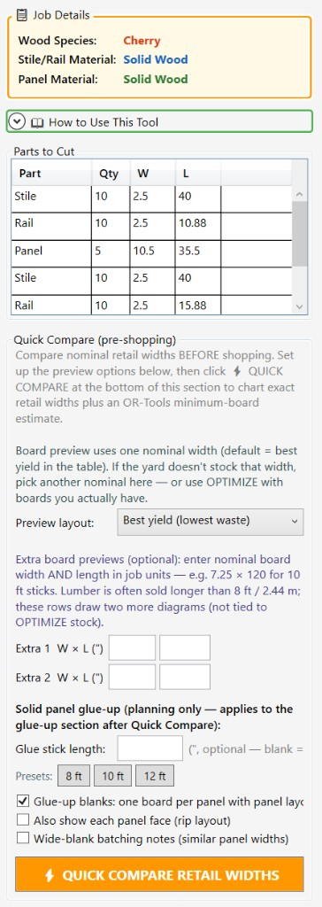
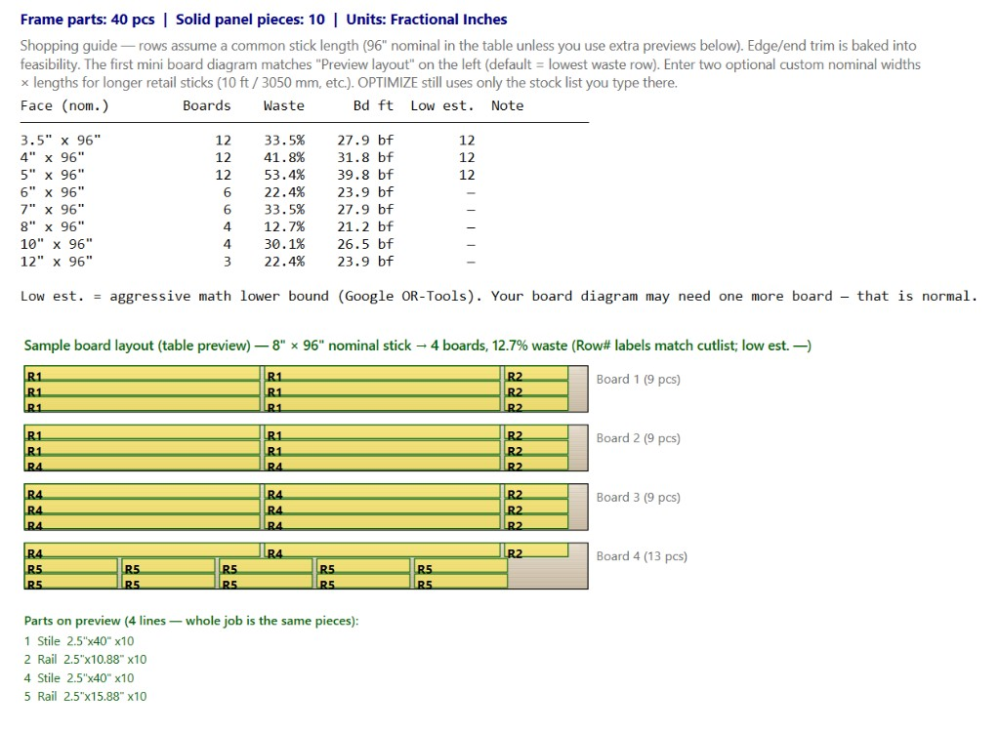
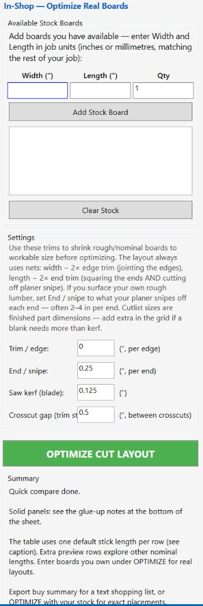
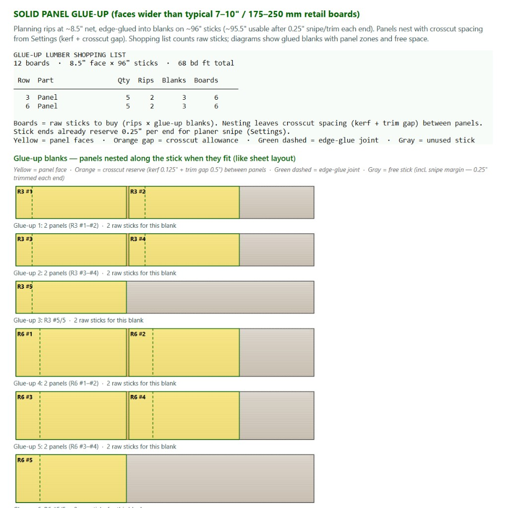

Use this tool to compare board sizes, estimate yield, and lay out solid-wood cabinet door parts with less waste. It is intended for straight solid-wood parts cut from boards: stiles, rails, mullions, muntins, and glue-up strips for wider solid-wood panels.
Before You Start
Have your cut list ready, along with the board widths and lengths you expect to buy or already have in the shop. If you rough-mill your own stock, decide how much edge trim, end trim, and planer snipe to allow for before you compare options.

The left sidebar — job materials, the parts list, then Quick Compare (pre-shopping). Set preview and glue-up options here, then click the orange button at the bottom of this section.
How the Tool Lays Out Parts
The tool follows the same basic sequence you would use in the shop: rip the board into strips first, then crosscut each strip into parts.
Each board is ripped lengthwise into rip strips that run with the grain. Each strip is sized to the finished width of a part.
Each rip strip is then crosscut into as many parts of that width as possible, allowing for saw kerf between cuts.
Rip strips of different widths can share the same board to reduce waste. For example, a 6 in board might yield one 3 in rip strip and one 2¼ in rip strip instead of leaving a wide unused section.
Parts are not turned sideways across the board. Solid-wood parts are cut with the grain running the length of the part, so a 30 in stile is never laid across a 6 in board.
Waste is what is left over: a strip too narrow for another part width, plus the end offcut left at the end of each rip strip.
The board is ripped into width-matched rip strips, then each strip is crosscut into parts with kerf between them. Anything too narrow for another rip strip is leftover strip; anything too short at the end is end offcut.
Using mixed-width rip strips on one board can keep you from buying another board just because the remaining width is too narrow for a full strip of the same size:
Mixed-width rip strips on a single board.
For Sheet Goods, Use Sheet Optimization
Plywood, MDF, melamine, slab panels, and edge banding should be planned in Sheet Optimization. That tool lays parts out on full sheets and accounts for blade width, edge trim, and grain direction for sheet goods.
Planning vs. Shop Layout
The left sidebar is two workflows stacked on one another. Set options first, then click the button at the bottom of that section:
Quick Compare (pre-shopping)
Use this before you buy. Click QUICK COMPARE RETAIL WIDTHS to chart common nominal face widths at one stick length (usually 8 ft / 96 in unless you change it). The right pane shows a shopping-guide table plus a sample board layout.
Preview layout
Which retail width drives the sample board diagram. Default is Best yield (lowest waste). If the yard does not stock that width, pick another nominal from the list.
Extra board previews
Optional width × length in job units, such as 7.25 × 120 for 10 ft sticks. These draw extra diagrams. They are not added to the OPTIMIZE stock list.
In-Shop — OPTIMIZE CUT LAYOUT
Use this after the boards are in the shop. Enter the actual stock widths, lengths, and quantities, then click the green button. This is the layout to trust because it uses your real boards.

After Quick Compare: the shopping guide and a sample board layout for the preview width. Row labels on the boards match the parts list (R1, R2, …).
The shopping-guide columns:
Face (nom.) — the retail face width × the stick length used for that row.
Boards — how many sticks the drawn layout needs.
Waste and Bd ft — planning estimates for that row (metric jobs show area instead of board feet).
Low est. — an aggressive lower bound from Google OR-Tools. The drawn layout may need one more board; that is normal.
Use Export buy summary (top of the right pane) for a plain-text shopping list. Print layouts prints the board diagrams after you run OPTIMIZE.

Scroll the sidebar past the blue In-Shop — Optimize Real Boards band. Add the boards you actually have, set trim and kerf, then click OPTIMIZE CUT LAYOUT.
Worked Example
Suppose your cut list is for four 18 × 30 in cope-and-stick doors with 2¼ in stiles and rails and a ½ in tongue on each end. Here is one way to work through it:
That cut list gives you eight stiles at 2.25 × 30 in and eight rails at 2.25 × 14.5 in.
The total finished part length is 356 in, all at 2¼ in wide.
Now try a 1×6 × 8 ft board (actual 5.5 × 96) with ⅛ in edge trim, 2 in of snipe cut off each end, and a ⅛ in kerf. That leaves a usable face of 5.25 × 92 in.
From that board, you can get two 2¼ in rip strips side by side, with a ¾ in leftover strip.
Those two rip strips give you 184 in of usable length per board, so two boards cover the job.
One rip strip can hold three stiles, while the other can hold one stile plus four rails, with only a small end offcut left over.
In Quick Compare, a 1×6 × 8 ft board comes out ahead of a 1×4 or 1×8 because it gives you two clean rip strips with less waste and fewer total board feet purchased.
One board of the worked example. The second board packs identically.
Solid-Wood Panel Glue-Ups
Solid-wood panels wider than a typical retail board (about 7–10 in / 175–250 mm) are planned separately from the frame shopping guide. After Quick Compare, the right pane adds a glue-up lumber list and stick diagrams. Plywood and MDF panels are skipped here — those belong in Sheet Optimization.

Glue-up shopping list and nested stick diagrams. Yellow is the panel face, orange is the crosscut reserve (kerf + trim gap), green dashed is the edge-glue joint, and gray is unused stick (including end snipe).
Set these in the Quick Compare section before you click the orange button:
Glue stick length: Nominal length of the boards you will rip for edge glue (before end trim). Leave blank to match the frame stick (96 in / 2440 mm). Use the 8 ft, 10 ft, or 12 ft presets for longer retail sticks.
Glue-up blanks: Draw one stick diagram per glued blank, with panels nested along the stick when they fit, plus the lumber shopping list.
Also show each panel face: Extra rip-layout pictures for each panel.
Wide-blank batching notes: Shop notes for edge-gluing one wide slab, then crosscutting several panels from it.
The shopping list columns are Row, Part, Qty, Rips (strips per blank), Blanks (glued-up assemblies), and Boards (raw sticks to buy — rips × blanks). Stick ends already reserve the Settings end/snipe amount for planer snipe.
Estimates vs. Actual Yield
Lumber is sold by nominal names such as 1× or 8/4 × 10, but actual boards vary after milling, even within the same grade. This tool works from the finished part sizes in your cut list and the board dimensions you enter.
Because of that, any board-feet total, waste percentage, or board count shown in Quick Compare is only a planning estimate. It assumes clean rectangular boards, fixed trim allowances, a fixed blade width, and one board length per row unless you enter a custom length. Real boards may be crowned, tapered, or have wane. Use Quick Compare to compare buying options. Once you know what actually came off the truck, use OPTIMIZE CUT LAYOUT with your real stock boards for a more accurate layout and yield.
Trim Allowances
Trim allowances reduce a rough or nominal board to a clean, workable size before any parts are placed. These allowances come off the whole board once, not from each individual part. These settings affect the usable size of the stock board before any parts are laid out:
Edge trim: The amount jointed off each long edge to make the board straight and square. It reduces the board width by twice that amount.
End trim / snipe: The amount cut from each end to square the board and remove planer snipe. It reduces the board length by twice that amount.
About snipe: When rough lumber goes through a thickness planer, the first and last few inches often cut a little deeper. If you surface your own stock, enter that loss here, commonly 2–4 in per end. If your boards are already surfaced (S4S), you can usually leave this at 0.
Edge trim and end trim come off the board once; saw kerf and the optional extra crosscut allowance sit between every pair of parts down the rip strip.
Practical Tips
Row numbers on the board diagrams match the parts list and the main cutlist grid.
Saw kerf (blade): the width of your blade, counted between cuts. This is different from edge trim or end trim, which come off the board before any parts are placed.
Crosscut gap (trim stock): extra length left between crosscuts in addition to the kerf. Use it if you rough-cut blanks a little long and trim them to final length later. Leave it at 0 if you cut straight to finished length. The default is 0.5 in.
End / snipe defaults to 0.25 in per end. If you surface rough lumber, raise it to what your planer actually snipes (often 2–4 in per end). S4S boards can stay at 0.
If you want extra material on each part for final milling, add that extra length or width in the cut list itself. The trim settings here apply only to the stock board.